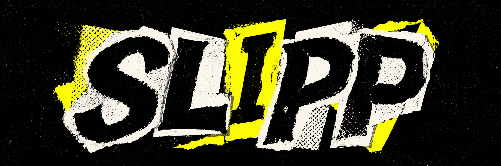

<!doctype html><html lang="no"><meta charset="utf-8"><meta name="viewport" content="width=device-width,initial-scale=1"><meta name="theme-color" content="#000000"><meta name="apple-mobile-web-app-capable" content="yes"><link rel="manifest" href="manifest.json"><link rel="apple-touch-icon" href="punk-icon.png"><title>SLIPP.</title><link rel="stylesheet" href="https://fonts.googleapis.com/css2?family=Barlow+Condensed:wght@700;800&family=IBM+Plex+Mono:wght@400;600&family=Space+Grotesk:wght@400;500;700&display=swap"><style> *{box-sizing:border-box}body{margin:auto;max-width:760px;background:#f5f1e7;color:#191919;font:15px Arial;padding:20px 20px 100px}header{border-bottom:3px solid;padding-bottom:12px}h1{font:bold 85px Georgia;letter-spacing:-8px;margin:0}em{color:#c52b24;font-style:normal}small{font-weight:bold;letter-spacing:1.5px;text-transform:uppercase}h2{font:bold 34px Georgia;margin:20px 0 8px}h3{font: bold 21px Georgia;margin:5px 0}p{line-height:1.5}nav{position:fixed;bottom:0;left:0;right:0;background:#f5f1e7;border-top:2px solid;display:flex;justify-content:center;padding:12px 0 max(12px,env(safe-area-inset-bottom));gap:5px}button,input,select{font:inherit;padding:10px;border:1px solid #222;background:transparent;color:inherit}button{cursor:pointer}button.active{background:#222;color:white}article{display:flex;gap:14px;border-bottom:1px solid #bcb5a7;padding:15px 0;align-items:start}article img{width:96px;height:96px;object-fit:cover}article div{flex:1}a{color:inherit}form{display:flex;gap:6px}input{min-width:0;flex:1}#status{color:#aaa;font-size:13px} .genrebar{display:flex;flex-wrap:wrap;gap:6px;margin:18px 0}.genrebar button{border-radius:20px;padding:8px 12px;font-size:13px}.editorial{border-top:2px solid;margin-top:28px;padding-top:16px}.editorial h2{font-size:28px;margin-top:6px}.editorial .release-strip{display:flex;gap:14px;overflow-x:auto;scroll-snap-type:x mandatory;padding:8px 0 15px;scrollbar-width:thin}.release-strip article{flex:0 0 44%;min-width:0;display:flex;flex-direction:column;gap:8px;scroll-snap-align:start;border:0;padding:0;position:relative}.release-strip article img{width:100%;height:auto;aspect-ratio:1;object-fit:cover;background:#ded8ca}.release-strip article div{width:100%;flex:auto}.release-strip article h3{font-size:19px;overflow-wrap:anywhere}.release-strip article button{align-self:flex-start}.release-strip .ordinal{font:bold 24px Georgia;color:#c52b24}.release-strip article p{margin:5px 0}.editorial .swipehint{font-size:11px;color:#aaa}.must-listen{border-top:3px solid #c52b24}.must-listen h2{font-size:30px}.issue-picker{display:flex;align-items:center;justify-content:space-between;gap:10px;margin:16px 0}.issue-picker label{font-size:12px;font-weight:bold;text-transform:uppercase;letter-spacing:1px}.issue-picker select{max-width:70%;background:#f5f1e7}@media(max-width:600px){.release-strip article{flex:0 0 30%;gap:5px;align-self:flex-start}.release-strip article h3{font-size:16px}.release-strip article p{font-size:12px}.release-strip .ordinal{font-size:19px}.editorial .release-strip{gap:10px;align-items:flex-start}article img{width:72px;height:72px}article button{padding:3px 7px;font-size:14px;min-height:28px}.release-strip article div{flex:none}.release-strip article img{width:100%;height:auto}.editorial h2,.must-listen h2{font-size:25px}}.follow-actions{display:flex;gap:5px;align-items:center}.follow-actions button{padding:3px 7px;font-size:14px}.quick-edition{background:#202020;color:#f5f1e7;padding:16px;margin:18px 0 30px;border-radius:3px}.quick-edition>small,.quick-rank{color:#ed7770}.quick-edition h2{font-size:25px;margin:15px 0 8px}.quick-edition section+section{border-top:1px solid #666;margin-top:18px;padding-top:5px}.quick-edition article{display:flex;align-items:center;gap:9px;padding:9px 0;border-bottom:1px solid #484848}.quick-edition article img{width:48px;height:48px;flex:none}.quick-edition article div{min-width:0}.quick-edition article h3{font-size:16px;overflow-wrap:anywhere;margin:0 0 3px}.quick-edition article p{font-size:11px;margin:3px 0}.quick-edition article div div{display:none}.quick-edition article small{display:none}.quick-edition button{border-color:#aaa;color:inherit}.quick-rank{font:bold 19px Georgia;flex:none}.quick-note{font-size:11px;color:#ccc;margin-bottom:0}.editorial-intro{margin-top:28px}.editorial-intro h2{margin:6px 0}.quick-edition .release-strip article{display:flex;flex-direction:column;align-items:stretch;flex:0 0 32%;gap:5px;border:0;padding:4px 0;min-width:0}.quick-edition .release-strip article img{width:100%;height:auto;aspect-ratio:1;object-fit:cover}.quick-edition .release-strip article a{color:#f5f1e7}.quick-edition .release-strip article h3{font-size:15px}.quick-edition .release-strip{overflow-x:auto;display:flex;gap:10px;scroll-snap-type:x mandatory}.quick-edition .release-strip article{scroll-snap-align:start}nav{justify-content:space-around;z-index:10;gap:0}nav button{border:0;flex:1;max-width:190px;font-size:12px;padding:5px 0;display:grid;justify-items:center;gap:5px}nav button.active{background:transparent;color:#c52b24;font-weight:bold}nav svg{width:23px;height:23px;fill:none;stroke:currentColor;stroke-width:1.7;stroke-linecap:round;stroke-linejoin:round}.section-head{display:flex;align-items:center;justify-content:space-between;gap:10px}.section-head button,.text-button{border:0;color:#b82b24;font-weight:bold}.genrebar button{min-height:42px}.release-strip article{flex-basis:44%}.quick-edition .release-strip article{flex-basis:44%}.release-strip article h3{font-size:17px}article img,article h3{cursor:pointer}.release-strip article img{border-radius:3px}.skeleton{height:160px;background:linear-gradient(100deg,#e5dfd2,#f0ebdf,#e5dfd2);border-radius:5px;margin:20px 0}dialog{background:#f5f1e7;color:#191919;border:0;border-radius:16px 16px 0 0;width:min(100%,520px);max-height:88dvh;margin:auto auto 0;padding:22px;overflow:auto}dialog::backdrop{background:#0008}dialog img{width:min(100%,280px);aspect-ratio:1;object-fit:cover;display:block;margin:15px auto}dialog a.primary{display:block;background:#191919;color:white;text-align:center;padding:14px;text-decoration:none;margin:15px 0}dialog button{min-height:44px}.follow-tools{display:flex;gap:8px;align-items:center;flex-wrap:wrap}.follow-tools button{min-height:44px}.issue-list button{display:block;width:100%;text-align:left;margin:8px 0;padding:16px}.quick-edition .release-strip article div div{display:none}dialog#release-detail{position:fixed;inset:0;margin:auto;width:calc(100% - 36px);max-width:420px;height:fit-content;max-height:calc(100dvh - 48px - env(safe-area-inset-top) - env(safe-area-inset-bottom));border-radius:16px;padding:18px;overflow-y:auto;overscroll-behavior:contain}#release-detail img{width:min(65%,220px,30dvh);margin:8px auto 14px}#release-detail h2{font-size:clamp(23px,6vw,30px);line-height:1.12;margin:8px 0}#release-detail p{margin:6px 0 12px}#release-detail a.primary{margin:10px 0;padding:12px}#release-detail .section-head button{padding:6px 12px}body:has(dialog[open]){overflow:hidden}.chart-row{display:flex;align-items:center;gap:12px}.chart-row>strong{width:30px;flex:none;font: bold 22px Georgia;color:#c52b24}.chart-row article{flex:1;min-width:0}.quick-edition{padding:12px;margin:12px 0 22px}.quick-edition h2{font-size:20px;margin:10px 0 6px}.quick-edition .release-strip article{flex-basis:27%;gap:4px}.quick-edition .release-strip article h3{font-size:13px}.quick-edition .quick-rank{font-size:15px}.quick-edition .quick-note{font-size:10px}.quick-edition section+section{margin-top:10px}.genre-preview{border-top:1px solid #bcb5a7;margin:18px 0;padding-top:5px}.genre-preview h2{font-size:28px;margin:10px 0}.genre-preview .release-strip{display:flex;gap:12px;overflow-x:auto;scroll-snap-type:x mandatory;padding:5px 0 12px}.genre-preview .release-strip article{flex:0 0 31%;font-size:13px}.genre-preview .release-strip article h3{font-size:16px}.genre-preview .release-strip article p{font-size:12px}.genre-preview .release-strip article div div{display:none}body:has(nav button[data-tab="home"].active) .release-strip article .follow-actions,body:has(nav button[data-tab="home"].active) .release-strip article p{display:none} .quick-edition .release-strip{gap:8px;padding-bottom:5px}.quick-edition .release-strip article{flex:0 0 calc((100% - 24px)/4);font-size:11px;line-height:1.3;gap:3px}.quick-edition .release-strip article h3,.genre-preview .release-strip article h3{display:-webkit-box;-webkit-line-clamp:2;-webkit-box-orient:vertical;overflow:hidden;line-height:1.15;margin:3px 0;min-height:2.3em}.quick-edition .release-strip article>div,.genre-preview .release-strip article>div{overflow:hidden;white-space:nowrap;text-overflow:ellipsis}.quick-edition .release-strip article h3,.genre-preview .release-strip article h3{white-space:normal}.quick-edition .release-strip article h3{font-size:12px}.quick-edition h2{font-size:18px}.quick-edition>small{font-size:10px}.quick-edition .quick-rank{font-size:13px}.quick-edition .quick-note{display:none}.quick-edition section+section{margin-top:10px;padding-top:4px}.genre-preview .release-strip article{flex-basis:calc((100% - 24px)/3)}.genre-preview .release-strip article h3{font-size:15px}.latest-review img{width:88px;height:88px;object-fit:cover;flex-shrink:0}.latest-review p{margin:5px 0}.latest-review a{color:#a52b24}.latest-review h3{margin:4px 0}/* Modern music zine */ :root{--ink:#0b0b0b;--paper:#f5f3e9;--acid:#f5ff00;--muted:#aaa;--line:#383838;--display:'Barlow Condensed','Arial Narrow',Arial,sans-serif;--mono:'IBM Plex Mono',monospace}html{background:var(--ink);color-scheme:dark}body{background:var(--ink);color:var(--paper);font:15px 'Space Grotesk',Arial,sans-serif;max-width:900px;padding:16px 18px 105px}header{display:flex;align-items:center;justify-content:space-between;gap:12px;border-bottom:1px solid var(--line);padding:8px 0 18px;background:var(--ink)}header h1.brand-logo{margin:0;line-height:0;font-size:0;flex:0 0 150px}header h1.brand-logo img{width:150px;height:auto;display:block;mix-blend-mode:lighten}header small{font:10px/1.5 var(--mono);text-align:right;color:var(--muted);max-width:120px}h2{font:800 34px/1 var(--display);text-transform:uppercase;letter-spacing:-.025em}h3{font:700 18px/1.2 'Space Grotesk',Arial,sans-serif;letter-spacing:-.035em}small,.quick-rank,.ordinal,.chart-row>strong{font-family:var(--mono);letter-spacing:.04em}em,.quick-rank,.release-strip .ordinal,.chart-row>strong{color:var(--acid)}main>small:first-child{display:block;background:var(--acid);color:var(--ink);padding:8px 10px;margin:12px 0 22px;font:600 11px var(--mono)}main>small:first-child em{color:inherit}article{border-color:var(--line)}article img,.release-strip article img{border-radius:0;background:#242424}button,input,select{background:#151515;color:var(--paper);border:1px solid var(--line);border-radius:0}button.active,.genrebar button.active{background:var(--acid);color:var(--ink);border-color:var(--acid)}.genrebar button{border-radius:999px;padding:8px 14px}nav{background:var(--ink);border-top:1px solid var(--line)}nav button{background:transparent;color:var(--paper);border:0}nav button.active{color:var(--acid);background:transparent}.quick-edition{background:transparent;color:var(--paper);border:0;padding:0;margin:0 0 28px}.quick-edition>small{color:var(--acid);font:11px var(--mono);display:block;margin-bottom:12px}.quick-edition section,.quick-edition section+section{background:transparent;padding:0;margin:0;border:0}.quick-edition section+section{border-top:1px solid var(--line);padding-top:20px;margin-top:24px}.quick-edition h2{font-size:36px;margin:0 0 14px}.quick-edition .release-strip{display:grid;grid-template-columns:repeat(6,minmax(0,1fr));gap:14px 10px;overflow:visible}.quick-edition .release-strip article{grid-column:span 2;display:flex;gap:5px;padding:0;align-items:stretch;min-width:0}.quick-edition section:first-of-type article:nth-child(-n+2){grid-column:span 3}.quick-edition .release-strip article h3{font-size:14px;min-height:0;display:block;overflow-wrap:anywhere;white-space:normal}.quick-edition .release-strip article>div{white-space:normal;overflow:visible;font-size:12px;color:var(--muted)}.quick-edition .release-strip article a{color:var(--paper)}.quick-edition .quick-rank{font:11px var(--mono);color:var(--acid)}.quick-edition section+section .release-strip{display:flex;flex-direction:column;gap:0}.quick-edition section+section .release-strip article{display:grid;grid-template-columns:24px 52px minmax(0,1fr);align-items:center;gap:10px;border-bottom:1px solid var(--line);padding:10px 0;width:100%}.quick-edition section+section .release-strip article img{width:52px;height:52px}.quick-edition section+section .release-strip article h3{font-size:16px}.genre-preview,.editorial,.must-listen{border-color:var(--line)}.genre-preview h2{font-size:34px}#latest-reviews{border-top:3px solid var(--acid);padding-top:18px}#latest-reviews>h2{background:none;color:var(--paper);padding:0;margin:0}#latest-reviews>p{color:var(--muted)}.latest-review a,.section-head button,.text-button{color:var(--acid)}.latest-review h3{font-size:20px}.issue-picker select,dialog{background:#151515;color:var(--paper)}dialog{border:1px solid var(--line);border-radius:0}dialog#release-detail{border:1px solid var(--line);border-radius:20px}dialog a.primary{background:var(--acid);color:var(--ink);font-weight:800}#release-detail a.primary{border-radius:999px;background:linear-gradient(35deg,var(--paper) 0%,#efc9a6 13%,#e5a06e 34%,#e5a06e 100%);color:var(--ink)}dialog::backdrop{background:#000b}.skeleton{background:#242424}#status,.editorial .swipehint{color:var(--muted)}button:focus-visible,a:focus-visible{outline:2px solid var(--acid);outline-offset:3px}#follow-releases .release-strip{display:flex;gap:12px;overflow-x:auto;scroll-snap-type:x mandatory}#follow-releases .release-strip article{flex:0 0 42%}@media(min-width:650px){.quick-edition section:first-of-type .release-strip{grid-template-columns:repeat(5,minmax(0,1fr))}.quick-edition section:first-of-type .release-strip article:nth-child(n){grid-column:span 1}}/* Warm accent refinement */:root{--orange:#e99a60}.artist-name{color:var(--orange)}.quick-edition .release-strip article h3{color:var(--paper)}.quick-edition h2{width:fit-content;max-width:100%;color:var(--paper);background-image:linear-gradient(35deg,#e5a06e 0%,#efc9a6 13%,var(--paper) 34%,var(--paper) 100%);-webkit-background-clip:text;background-clip:text;-webkit-text-fill-color:transparent}#follow-releases section>h3{color:var(--orange)}/* Consistent warm heading accent */h2,h3,article h3,b,strong{color:var(--paper);background-image:linear-gradient(35deg,#e5a06e 0%,#efc9a6 13%,var(--paper) 34%,var(--paper) 100%);-webkit-background-clip:text;background-clip:text;-webkit-text-fill-color:transparent;width:fit-content;max-width:100%}.chart-row>strong,.release-strip .ordinal,.quick-rank{background:none;-webkit-text-fill-color:currentColor;color:var(--acid)}.release-strip .ordinal{font-family:var(--mono)}.quick-edition .release-strip article h3{color:var(--paper)}#follow-releases section>h3{color:var(--orange)}/* White editorial links */.latest-review a,#latest-reviews a,article a:not(.primary){color:var(--paper);-webkit-text-fill-color:currentColor}/* Same-size following covers, horizontal only for same-day singles */#follow-releases .release-strip article{flex:0 0 min(85%,340px);display:grid;grid-template-columns:96px minmax(0,1fr);align-items:start;gap:14px;scroll-snap-align:start}#follow-releases .release-strip article img{width:96px;height:96px;aspect-ratio:1;object-fit:cover}#follow-releases .release-strip article>div{min-width:0;width:auto}#follow-releases section{border-bottom:1px solid var(--line);padding:12px 0 18px}@media(max-width:600px){#follow-releases .release-strip article{grid-template-columns:72px minmax(0,1fr);gap:14px}#follow-releases .release-strip article img{width:72px;height:72px}}/* Cream release dates */article small em,#follow-releases article small em,.release-strip article small em{color:var(--paper);-webkit-text-fill-color:currentColor}.inline-icon{display:inline-block;width:1em;height:1em;vertical-align:-.12em;flex-shrink:0}#release-detail a.primary .inline-icon{margin-right:.25em;vertical-align:-.1em}#release-detail button[data-close-detail]{border:0;background:transparent;color:var(--paper);box-shadow:none;min-width:44px;min-height:44px;padding:8px;font-size:24px;font-weight:400}#release-detail button[data-close-detail]:focus,#release-detail button[data-close-detail]:focus-visible{outline:none;box-shadow:none}#release-detail button[data-close-detail]{font-size:18px;line-height:1;-webkit-tap-highlight-color:transparent}#release-detail button[data-close-detail]:focus-visible{color:#e99a60}header .site-version{display:block;margin-top:4px;font-size:10px;color:var(--muted);letter-spacing:0;text-transform:none}#release-detail .detail-format{color:var(--muted);font:10px/1.5 var(--mono);letter-spacing:1.2px;text-transform:uppercase}article[data-release]{cursor:pointer}#latest-reviews>h2{background:linear-gradient(35deg,#e5a06e 0%,#efc9a6 13%,var(--paper) 34%,var(--paper) 100%);background-clip:text;-webkit-background-clip:text;color:var(--paper);-webkit-text-fill-color:transparent}</style><header><h1 class="brand-logo"></h1><small>Ny musikk.<br>Hver fredag.<span class="site-version">v0.76</span></small></header><main id="main"></main><nav><button data-tab="home"><svg viewBox="0 0 24 24" aria-hidden="true"><path d="M3 10 12 3l9 7v11h-6v-7H9v7H3z"/></svg>Forsiden</button><button data-tab="explore"><svg viewBox="0 0 24 24" aria-hidden="true"><circle cx="12" cy="12" r="9"/><path d="m15 9-2 5-5 2 2-5z"/></svg>Utforsk</button><button data-tab="charts"><svg viewBox="0 0 24 24" aria-hidden="true"><path d="M4 20V13h4v7M10 20V8h4v12M16 20V3h4v17"/></svg>Topp 100</button><button data-tab="artists"><svg viewBox="0 0 24 24" aria-hidden="true"><circle cx="12" cy="8" r="4"/><path d="M4 21v-2a8 8 0 0 1 16 0v2"/></svg>Følger</button></nav><dialog id="release-detail"></dialog><script>
function displayDate(value){const m=String(value||'').match(/^(\d{4})-(\d{2})-(\d{2})/);return m?m[3]+'.'+m[2]+'.'+m[1]:String(value||'');}

const main=document.querySelector('main');let tab='home',artists=JSON.parse(localStorage.getItem('artists')||'[]'),saved=JSON.parse(localStorage.getItem('saved')||'[]'),cache=[];const esc=s=>String(s??'').replace(/[&<>"']/g,c=>({'&':'&amp;','<':'&lt;','>':'&gt;','"':'&quot;',"'":'&#39;'}[c]));function store(){localStorage.setItem('artists',JSON.stringify(artists));localStorage.setItem('saved',JSON.stringify(saved))}function coverSize(url,size=600){const src=url||'punk-icon.png';try{const u=new URL(src,location.href);if(/(^|\.)mzstatic\.com$/i.test(u.hostname))return src.replace(/\d+x\d+(?=[a-z]*\.(?:jpg|jpeg|png|webp)(?:\?|$))/i,size+'x'+size);if(u.hostname==='coverartarchive.org')return src.replace(/-(?:250|500|1200)(?=\?|$)/,'-'+(size>=1200?1200:500));}catch{}return src}function releaseFormat(r){const t=String(r.releaseFormat||r.collectionType||r.albumType||r.kind||'').toLowerCase(),n=String(r.collectionName||r.name||'');if(t==='singel'||t==='single'||t==='song'||/\s[-–]\sSingle$/i.test(n))return 'Singel';if(t==='ep'||/\s[-–]\sEP$/i.test(n))return 'EP';if(t==='album')return 'Album';return ''}function forumLink(artist,title,genre){if(!artist||!title)return '';const map={'indie':'indieheads','rock':'rock','pop':'popheads','hip-hop':'hiphopheads','hip hop':'hiphopheads','country':'CountryMusic','jazz':'Jazz','metal':'Metal','elektronisk':'electronicmusic','electronic':'electronicmusic','underground':'TheOverload','techno':'Techno','house':'House','jungle/drum & bass':'DnB','ambient':'ambientmusic','dubstep':'realdubstep','trance':'trance','breakbeat':'TheOverload','garage':'TheOverload','hardcore':'TheOverload','downtempo':'electronicmusic','electronica':'electronicmusic','idm/experimental':'idm','industrial':'industrialmusic','bass':'TheOverload','folk':'indieheads'};const sub=map[String(genre||'').toLowerCase()];const query=encodeURIComponent('"'+artist+'" "'+String(title).replace(/\s+[-–]\s+(Single|EP)$/i,'')+'"');return '<a href="https://www.reddit.com/'+(sub?'r/'+sub+'/':'')+'search/?q='+esc(query)+(sub?'&amp;restrict_sr=1':'')+'" target="_blank" rel="noopener noreferrer">Forum (Reddit)</a>'}function listenerLink(artist,title){if(!artist||!title)return '';const clean=String(title).replace(/\s+[-–]\s+(Single|EP)$/i,'');return '<a href="https://www.albumoftheyear.org/search/?q='+esc(encodeURIComponent(artist+' '+clean))+'" target="_blank" rel="noopener noreferrer">Finn lytteranmeldelser (AOTY)</a>'}function item(r){return `<article data-release="${esc(r.collectionId||r.id)}"><div><small><em>${esc(displayDate(r.releaseDate))}</em></small><h3>${esc(r.collectionName||r.name)}</h3><span class="artist-name">${esc(r.artistName)}</span><div style="font-size:12px;color:#aaa">${esc(r.genre||r.primaryGenreName||'')}${r.editorial?.label?' · '+esc(r.editorial.label):r.recommendationDate?' · Anbefalt '+esc(displayDate(r.recommendationDate)):''}</div><p><a href="https://open.spotify.com/search/${encodeURIComponent(r.artistName+' '+(r.collectionName||r.name))}" target="_blank" rel="noopener">Spotify <svg class="inline-icon" aria-hidden="true" viewBox="0 0 24 24" fill="none" stroke="currentColor" stroke-width="2" stroke-linecap="round" stroke-linejoin="round"><path d="M7 17 17 7M7 7h10v10"/></svg></a> · ${listenerLink(r.artistName,r.collectionName||r.name)} · ${forumLink(r.artistName,r.collectionName||r.name,r.genre||r.primaryGenreName)}</p></div></article>`}async function json(url){const r=await fetch(url);if(!r.ok)throw Error('Nettverksfeil');return r.json()}const genres=['Indie','Rock','Country','Pop','Hip-hop','Jazz','Elektronisk','Metal'];const undergroundGenres=['Breakbeat','Garage','Hardcore','House','Jungle/Drum & Bass','Techno','Trance','Ambient','Downtempo','Electronica','IDM/Experimental','Industrial','Dubstep','Bass'];async function renderUnderground(el,g){const panel=document.createElement('section');panel.innerHTML='<h2>Underground.</h2><p>Elektroniske nisjesjangere</p><div class="genrebar"></div><div data-underground-results></div>';el.append(panel);const bar=panel.querySelector('.genrebar'),out=panel.querySelector('[data-underground-results]');let selected='Alle';const data=await json('./underground.json').catch(()=>({genres:{}}));if(g!==generation||!panel.isConnected)return;function draw(){bar.innerHTML=['Alle',...undergroundGenres].map(k=>'<button class="'+(k===selected?'active':'')+'" aria-pressed="'+(k===selected)+'">'+esc(k)+'</button>').join('');bar.querySelectorAll('button').forEach((b,i)=>b.onclick=()=>{selected=['Alle',...undergroundGenres][i];draw()});const rows=selected==='Alle'?undergroundGenres.flatMap(k=>(data.genres?.[k]||[]).slice(0,5)).filter((p,i,a)=>a.findIndex(q=>q.artist===p.artist&&q.title===p.title)===i):(data.genres?.[selected]||[]).slice(0,5);out.innerHTML=rows.length?rows.map(p=>'<article><div><h3>'+esc(p.title)+'</h3><span>'+esc(p.artist)+'</span><p><a href="'+esc(p.url)+'" target="_blank" rel="noopener noreferrer">'+esc(p.source)+'</a> · <a href="https://open.spotify.com/search/'+esc(encodeURIComponent(p.artist+' '+p.title.replace(/\\s+-\\s+(EP|Single)$/i,'')))+'" target="_blank" rel="noopener noreferrer">Finn på Spotify</a> · '+listenerLink(p.artist,p.title)+' · '+forumLink(p.artist,p.title,selected==='Alle'?undergroundGenres.find(k=>(data.genres?.[k]||[]).some(q=>q.artist===p.artist&&q.title===p.title)):selected)+'</p>'+ (p.articles||[]).map(a=>'<p><a href="'+esc(a.url)+'" target="_blank" rel="noopener noreferrer">'+esc(a.title)+'</a> · '+esc(a.source)+'</p>').join('')+'</div></article>').join(''):'<p>Ingen verifiserte utgivelser i denne sjangeren ennå.</p>'}draw()}let selectedGenre=localStorage.getItem('slippGenreEdition')||'Alle';if(![...genres,'Underground'].includes(selectedGenre))selectedGenre='Alle';let selectedIssue='latest';function weekLabel(date){const d=new Date(date+'T12:00:00Z');if(isNaN(d))return '';d.setUTCDate(d.getUTCDate()+4-(d.getUTCDay()||7));const y=d.getUTCFullYear();return 'Uke '+Math.ceil(((d-new Date(Date.UTC(y,0,1)))/86400000+1)/7)+' · '+y}function renderMust(sections){return '<div class="quick-edition"><small>01 / UKENS UTVALG</small>'+sections.map(sec=>{const rows=sec.items.slice(0,5).map((p,i)=>({ordinal:i+1,releaseFormat:/singler/i.test(sec.title)?'Singel':'Album',id:'edition-'+p.slice(0,2).join('|'),artistName:p[0],name:p[1],artworkUrl100:p[4]||'',genre:p[2]||'',recommendationDate:p[5]?'':p[3]||sec.date||'',editorial:p[5],releaseDate:p[5]?.releaseDate||''}));cache.push(...rows);return '<section><h2>'+esc(sec.title)+'</h2>'+(rows.length?'<div class="release-strip">'+rows.map(r=>item(r).replace(/^(<article[^>]*>)/,'$1<span class="quick-rank">'+String(r.ordinal).padStart(2,'0')+'</span>')).join('')+'</div>':'<p>Ukens liste er ikke publisert ennå.</p>')+'</section>'}).join('')+'<p class="quick-note">På tvers av sjangere · popularitet og redaksjonell omtale</p></div>'}async function renderLatestReviews(el,g,editions,d){const target=el.querySelector('#latest-reviews');if(!target)return;try{const [db,verified,registry,feed]=await Promise.all([json('./editorial/album-reviews.json'),json('./editorial/verified-releases.json'),json('./sources.json'),json('./editorial/articles.json')]);if(g!==generation||!target.isConnected)return;const key=(a,b)=>normalizeCover(a)+'|'+normalizeCover(b),groups=new Map(),allowed=new Set(registry.sources.map(x=>x.id)),feedUrls=new Set(feed.articles.filter(a=>a.kind==='review').map(a=>a.url));const add=(r,articles)=>{const k=key(r.artistName,r.name),old=groups.get(k)||{...r,articles:[]};for(const a of articles){try{if(!allowed.has(new URL(a.url).hostname.replace(/^www\./,''))||!Number.isFinite(Date.parse(a.published))||(!feedUrls.has(a.url)&&a.verification!=='editorial-feed-match'))continue;if(!old.articles.some(x=>x.url===a.url))old.articles.push(a)}catch{}}groups.set(k,old)};const pairs=[...Object.values(editions).flatMap(s=>s.flatMap(x=>x.items||[])),...(d.mustListen?.albums||[]),...(d.mustListen?.singles||[])];const catalog=new Map(pairs.map(p=>[key(p[0],p[1]),p]));for(const x of db.releases||[]){const p=catalog.get(key(x.artist,x.title));if(!p)continue;add({id:'edition-'+p.slice(0,2).join('|'),artistName:p[0],name:p[1],genre:p[2],artworkUrl100:p[4],releaseDate:p[5]?.releaseDate},x.articles.filter(a=>a.verified===true))}for(const x of verified.releases||[]){if(x.format!=='album')continue;add({id:'review-'+key(x.artist,x.title),artistName:x.artist,name:x.title,genre:x.genre,artworkUrl100:x.artwork,releaseDate:x.releaseDate},x.articles.filter(a=>a.kind==='review'))}const underground=await json('./underground.json').catch(()=>({genres:{}}));if(g!==generation||!target.isConnected)return;const subByKey=new Map();for(const [sub,items] of Object.entries(underground.genres||{})){for(const p of items){const k=key(p.artist,p.title);if(!subByKey.has(k))subByKey.set(k,[]);subByKey.get(k).push(sub);add({id:'underground-review-'+k,artistName:p.artist,name:p.title,genre:sub,artworkUrl100:p.artwork},(p.articles||[]).filter(a=>a.kind==='review'));}}const linked=new Set([...groups.values()].flatMap(x=>x.articles.map(a=>a.url)));const dedicated=await json('./editorial/inverted-audio-reviews.json').catch(()=>({articles:[]}));if(g!==generation||!target.isConnected)return;const ia=[...new Map([...feed.articles,...dedicated.articles].map(a=>[a.url,a])).values()].filter(a=>a.sourceId==='inverted-audio.com'&&a.kind==='review'&&!linked.has(a.url)&&Number.isFinite(Date.parse(a.published))).filter(a=>{try{return new URL(a.url).hostname.replace(/^www\./,'')==='inverted-audio.com'}catch{return false}});const aliases={'folk':'Indie','alternative':'Indie','alternative rock':'Indie','hip hop':'Hip-hop','hip-hop/rap':'Hip-hop','rap':'Hip-hop','electronic':'Elektronisk','dance':'Elektronisk','electronica':'Elektronisk','heavy metal':'Metal'};const classify=r=>{const raw=String(r.genre||'').toLowerCase();const subs=[...new Set([...(subByKey.get(key(r.artistName,r.name))||[]),...undergroundGenres.filter(x=>x.toLowerCase()===raw)])];const main=genres.find(x=>x.toLowerCase()===raw)||aliases[raw]||'';return {main,subs}};const rows=[...groups.values()].filter(x=>x.articles.length).map(x=>({...x,...classify(x),articles:x.articles.sort((a,b)=>Date.parse(b.published)-Date.parse(a.published))}));cache.push(...rows);const all=[...rows,...ia.map(a=>({standalone:true,name:a.title,main:'Underground',subs:undergroundGenres.filter(k=>{const tags=(a.tags||[]).map(v=>String(v).toLowerCase().trim());const aliases={'Jungle/Drum & Bass':['jungle','drum & bass','drum and bass','dnb'],'IDM/Experimental':['idm','experimental'],'Garage':['uk garage','garage']};return (aliases[k]||[k.toLowerCase()]).some(v=>tags.includes(v))}),articles:[a]}))].sort((a,b)=>Date.parse(b.articles[0].published)-Date.parse(a.articles[0].published));let selected='Alle',sub='Alle';target.innerHTML='<h2>Anmeldelser</h2><p>Fra musikkredaksjoner verden over</p><div class="genrebar" data-review-genres></div><div class="genrebar" data-review-subs></div><div data-review-results></div>';const bar=target.querySelector('[data-review-genres]'),subbar=target.querySelector('[data-review-subs]'),out=target.querySelector('[data-review-results]');function draw(){const buttons=(el,values,active,change)=>{el.innerHTML=values.map(x=>'<button style="border-radius:999px" class="'+(x===active?'active':'')+'" aria-pressed="'+(x===active)+'">'+esc(x)+'</button>').join('');el.querySelectorAll('button').forEach((b,i)=>b.onclick=()=>change(values[i]))};buttons(bar,['Alle',...genres,'Underground'],selected,x=>{selected=x;sub='Alle';draw()});subbar.hidden=selected!=='Underground';subbar.style.display=subbar.hidden?'none':'';if(!subbar.hidden)buttons(subbar,['Alle',...undergroundGenres],sub,x=>{sub=x;draw()});const visible=all.filter(r=>selected==='Alle'||(selected==='Underground'?(sub==='Alle'?(r.subs.length||r.standalone||r.main==='Underground'):r.subs.includes(sub)):r.main===selected)).slice(0,10);out.innerHTML=visible.length?visible.map(r=>'<article class="latest-review"'+(r.standalone?'':' data-release="'+esc(r.id)+'"')+'>'+(r.artworkUrl100?'':'')+'<div><small>'+esc(r.subs.join(' · ')||r.main|| (r.standalone?'Inverted Audio':'Uklassifisert'))+' · '+esc(displayDate(r.articles[0].published))+'</small><h3>'+esc(r.name)+'</h3>'+(r.artistName?'<span class="artist-name">'+esc(r.artistName)+'</span>':'')+'<p>'+r.articles.map(a=>'<a href="'+esc(a.url)+'" target="_blank" rel="noopener noreferrer">'+esc(a.source)+'</a>').join(' · ')+(selected==='Underground'?' · <a href="https://open.spotify.com/search/'+esc(encodeURIComponent(r.standalone?r.name.replace(/^(album|ep|track|single|record) review:\s*/i,''):r.artistName+' '+r.name))+'" target="_blank" rel="noopener noreferrer">Spotify</a>':'')+'</p></div></article>').join(''):'<p>Ingen anmeldelser i denne sjangeren ennå.</p>'}draw();}catch(e){if(target.isConnected)target.innerHTML='<h2>Anmeldelser</h2><p>Kunne ikke hente anmeldelser akkurat nå.</p>'}}async function renderCritics(el,g){const target=el.querySelector('#critics');if(!target)return;try{const d=await json('./editorial/verified-releases.json');if(g!==generation||!target.isConnected)return;const rows=(d.releases||[]).filter(x=>x.independentSourceCount>=2).slice(0,5);target.innerHTML='<h2>Kritikerfavoritter.</h2><small>Redaksjonell omtale · ikke nødvendigvis anbefaling</small>'+ (rows.length?rows.map((x,i)=>'<article><strong>'+ (i+1)+'</strong><div><h3>'+esc(x.title)+'</h3>'+esc(x.artist)+'<p style="color:#c52b24">'+esc(x.independentSourceCount)+' uavhengige redaksjoner</p>'+x.articles.filter(a=>a.sourceType==='editorial').map(a=>'<a target="_blank" rel="noopener noreferrer" href="'+esc(a.url)+'">'+esc(a.source)+'</a>').join(' · ')+'</div></article>').join(''):'<p>Ingen nye utgivelser med katalogtreff og omtale fra minst to redaksjoner ennå.</p>')}catch(e){if(target.isConnected)target.innerHTML='<h2>Kritikerfavoritter.</h2><p>Avventer første utgivelsesverifisering.</p>'}}function editorialSearchLinks(r,registry){const artist=r.artistName,title=r.collectionName||r.name;if(!artist||!title)return '';const raw=String(r.genre||r.primaryGenreName||'').toLowerCase().trim();const aliases={'alternative':'indie','alternative rock':'indie','folk':'indie','hip hop':'hip-hop','hip-hop/rap':'hip-hop','rap':'hip-hop','electronic':'elektronisk','dance':'elektronisk','heavy metal':'metal','garage':'uk garage','jungle/drum & bass':'drum & bass','jungle / drum & bass':'drum & bass','idm/experimental':'electronica','idm / experimental':'electronica','downtempo':'electronica','breakbeat':'electronica','bass':'drum & bass','hardcore':'elektronisk','dubstep':'elektronisk','industrial':'electronica'};const genre=aliases[raw]||raw;const electronic=['elektronisk','electronica','house','techno','ambient','uk garage','drum & bass','trance','underground'].includes(genre);const sources=(registry.sources||[]).filter(x=>x.type==='editorial'&&/^[a-z0-9.-]+$/i.test(x.id));let relevant=sources.filter(x=>(x.genres||[]).some(g=>g.toLowerCase()===genre));if(electronic){const extras=sources.filter(x=>['inverted-audio.com','ra.co','mixmag.net','ukf.com'].includes(x.id));relevant=[...new Map([...relevant,...extras].map(x=>[x.id,x])).values()]}if(!relevant.length)relevant=sources.filter(x=>['pitchfork.com','rollingstone.com','nme.com','popmatters.com'].includes(x.id));const clean=String(title).replace(/\s+[-–]\s+(Single|EP)$/i,'');const domains=relevant.map(x=>'site:'+x.id).join(' OR ');return '<p style="font-size:.85em;opacity:.8"><a href="https://www.google.com/search?q='+esc(encodeURIComponent('"'+artist+'" "'+clean+'" (review OR anmeldelse)'+(domains?' ('+domains+')':'')))+'" target="_blank" rel="noopener noreferrer">⌕ Finn flere anmeldelser</a></p>'}async function releaseEditorial(r,d){const target=d.querySelector('[data-editorial-detail]');if(!target)return;const date=r.releaseDate||r.editorial?.releaseDate;const [db,registry]=await Promise.all([json('./editorial/album-reviews.json').catch(()=>({releases:[]})),json('./sources.json').catch(()=>({sources:[]}))]);if(!target.isConnected)return;const matches=(db.releases||[]).filter(x=>normalizeCover(x.artist)===normalizeCover(r.artistName)&&normalizeCover(x.title)===normalizeCover(r.collectionName||r.name));const articles=[...new Map(matches.flatMap(x=>x.articles||[]).filter(a=>a.verified===true&&/^https:\/\//.test(a.url)).map(a=>[a.url,a])).values()];target.innerHTML=(date?'<p><small>Utgivelsesdato</small><br>'+esc(displayDate(date))+'</p>':'')+(articles.length?'<h3>Anmeldelser</h3>'+articles.map(a=>'<p><a target="_blank" rel="noopener noreferrer" href="'+esc(a.url)+'">'+esc(a.source)+' <svg class="inline-icon" aria-hidden="true" viewBox="0 0 24 24" fill="none" stroke="currentColor" stroke-width="2" stroke-linecap="round" stroke-linejoin="round"><path d="M7 17 17 7M7 7h10v10"/></svg></a></p>').join(''):'<h3>Anmeldelser</h3><p>Ingen redaksjonelle anmeldelser funnet ennå.</p>')+editorialSearchLinks(r,registry)+'<div style="border-top:1px solid rgba(128,128,128,.3);padding-top:12px;margin-top:16px;display:flex;flex-wrap:wrap;gap:8px 20px;justify-content:space-between;font-size:.8em;opacity:.75">'+listenerLink(r.artistName,r.collectionName||r.name).replace('Finn lytteranmeldelser (AOTY)','Lytteranmeldelser')+forumLink(r.artistName,r.collectionName||r.name,r.genre||r.primaryGenreName).replace('Forum (Reddit)','Forum')+'</div>'}let selectedSource='';async function showSources(g){main.innerHTML='<h2>Redaksjoner.</h2><p>Henter kilder…</p>';try{const [registry,candidates,verified]=await Promise.all([json('./sources.json'),json('./editorial/candidates.json').catch(()=>({articles:[]})),json('./editorial/verified-releases.json').catch(()=>({releases:[]}))]);if(g!==generation)return;const sources=registry.sources||[],source=sources.find(x=>x.id===selectedSource||x.name.toLowerCase()===selectedSource.toLowerCase());if(!source){main.innerHTML='<h2>Redaksjoner.</h2><p>Utforsk musikkredaksjonene bak SLIPP.</p>'+sources.map(x=>'<article><div><h3>'+esc(x.name)+'</h3><p>'+esc(x.genres.join(' · '))+'</p><small>'+esc(x.type==='editorial'?'Uavhengig redaksjon':'Kommersiell kilde')+'</small></div><button data-source="'+esc(x.id)+'">Åpne <svg class="inline-icon" aria-hidden="true" viewBox="0 0 24 24" fill="none" stroke="currentColor" stroke-width="2" stroke-linecap="round" stroke-linejoin="round"><path d="M4 12h15m-6-6 6 6-6 6"/></svg></button></article>').join('');return}const articles=candidates.articles.filter(a=>a.sourceId===source.id).sort((a,b)=>String(b.published).localeCompare(String(a.published)));const rows=verified.releases.filter(x=>x.articles.some(a=>a.sourceId===source.id)).map(x=>({id:'source-'+x.artist+'|'+x.title,artistName:x.artist,name:x.title,genre:x.genre,releaseDate:x.releaseDate,artworkUrl100:x.artwork}));cache.push(...rows);main.innerHTML='<button data-source-list>← Alle redaksjoner</button><h2>'+esc(source.name)+'.</h2><p>'+esc(source.genres.join(' · '))+'</p><p><a href="'+esc(source.website)+'" target="_blank" rel="noopener noreferrer">Redaksjonens nettside <svg class="inline-icon" aria-hidden="true" viewBox="0 0 24 24" fill="none" stroke="currentColor" stroke-width="2" stroke-linecap="round" stroke-linejoin="round"><path d="M7 17 17 7M7 7h10v10"/></svg></a></p><h2>Katalogverifiserte utgivelser</h2>'+(rows.length?'<div class="release-strip">'+rows.map(item).join('')+'</div>':'<p>Ingen katalogtreff ennå.</p>')+'<h2>Siste musikkartikler</h2><p>Automatisk innsamlet · anbefalinger er ikke bekreftet.</p>'+(articles.length?articles.map(a=>'<article><div><small>'+esc(displayDate(a.published))+' · '+esc(a.kind)+'</small><h3><a href="'+esc(a.url)+'" target="_blank" rel="noopener noreferrer">'+esc(a.title)+'</a></h3></div></article>').join(''):'<p>Ingen aktuelle artikler i innsamlingen.</p>')}catch{if(g===generation)main.textContent='Kunne ikke hente redaksjoner.'}}async function loadEdition(g){const el=document.querySelector('#edition');if(!el)return;try{const archive=await json('./archive/index.json').catch(()=>[]);const entry=tab==='archive'?archive.find(x=>x.date===selectedIssue):null;const [d,editions]=await Promise.all([json(entry?'./'+entry.edition:'./edition.json'),json(entry?'./'+entry.genres:'./genres.json')]);const must=[{title:'Ukens 5 album',source:'SLIPP',items:d.mustListen?.albums||[],must:true,date:d.mustListen?.date},{title:'Ukens 5 singler',source:'SLIPP',items:d.mustListen?.singles||[],must:true,date:d.mustListen?.date}];const genreOf=p=>({folk:'Indie',alternative:'Indie',electronic:'Elektronisk',electronica:'Elektronisk','hip hop':'Hip-hop','hip-hop/rap':'Hip-hop'}[String(p[2]||'').toLowerCase()]||p[2]);const genreSections=Object.fromEntries(genres.map(k=>{const existing=editions[k]||[],seen=new Set(existing.filter(s=>/singler/i.test(s.title)).flatMap(s=>s.items||[]).map(p=>normalizeCover(p[0])+'|'+normalizeCover(p[1]))),extra=must[1].items.filter(p=>genreOf(p)===k&&!seen.has(normalizeCover(p[0])+'|'+normalizeCover(p[1])));return [k,[...existing,...(extra.length?[{title:'Ukens singler',source:'SLIPP',date:d.date,items:extra}]:[])]]}));const sections=(tab==='archive'||selectedGenre==='Alle')?d.sections.filter(s=>!/kommende|upcoming/i.test(s.title)).slice(0,5):genreSections[selectedGenre]||[];if(g!==generation)return;if(tab==='home'){el.innerHTML='<small><em>'+esc(weekLabel(d.date))+'</em></small>'+renderMust(must)+'<section class="genre-preview" id="latest-reviews"><h2>Anmeldelser</h2><p>Henter anmeldelser…</p></section>';hydrateCovers(el,cache,g);renderLatestReviews(el,g,editions,d);return}if(tab==='archive'&&!entry){el.innerHTML='<h2>Arkiv.</h2><p>Tidligere utgaver</p><div class="issue-list">'+archive.slice().sort((a,b)=>b.date.localeCompare(a.date)).map(x=>'<button data-issue="'+esc(x.date)+'">'+esc(x.date.split('-').reverse().join('.'))+' <svg class="inline-icon" aria-hidden="true" viewBox="0 0 24 24" fill="none" stroke="currentColor" stroke-width="2" stroke-linecap="round" stroke-linejoin="round"><path d="M4 12h15m-6-6 6 6-6 6"/></svg></button>').join('')+'</div>';return}el.innerHTML='<div class="issue-picker"><label for="issue">Utgave</label><select id="issue"><option value="latest">Nyeste utgave</option>'+archive.slice().sort((a,b)=>b.date.localeCompare(a.date)).map(x=>'<option value="'+esc(x.date)+'" '+(selectedIssue===x.date?'selected':'')+'>'+esc(x.date.split('-').reverse().join('.'))+'</option>').join('')+'</select></div><small><em>'+esc(weekLabel(d.date))+'</em></small>'+(tab==='archive'?renderMust(must):'')+'<div class="genrebar" aria-label="Sjangerutgaver"><button data-genre="Alle" aria-pressed="'+(selectedGenre==='Alle')+'" class="'+(selectedGenre==='Alle'?'active':'')+'">Alle</button>'+[...genres,'Underground'].map(x=>'<button data-genre="'+esc(x)+'" aria-pressed="'+(selectedGenre===x)+'" class="'+(selectedGenre===x?'active':'')+'">'+esc(x)+'</button>').join('')+'</div>'+sections.map(sec=>{const rows=sec.items.slice(0,5) .map((pair,i)=>({ordinal:i+1,releaseFormat:/singler/i.test(sec.title)?'Singel':sec.source==='SLIPP'?'Album':'',id:'edition-'+pair.slice(0,2).join('|'),artistName:pair[0],name:pair[1],artworkUrl100:pair[4]||'',genre:pair[2]||'Ukjent',recommendationDate:pair[5]?'':pair[3]||sec.date||'',releaseDate:pair[5]?.releaseDate||'',editorial:pair[5]}));cache.push(...rows);return '<section class="editorial'+(sec.must?' must-listen':'')+'"><small><em>'+esc(sec.must?'Hurtigutgaven · '+(displayDate(sec.date)||'Avventer ukens data'):sec.date?weekLabel(sec.date):'Tidligere oversikt')+'</em></small><h2>'+esc(sec.title)+'</h2>'+(sec.source==='SLIPP'&&!sec.must?'<p>Redaksjonelle anbefalinger og populære nye album</p>':sec.must?'<p>På tvers av sjangere · popularitet og redaksjonell omtale</p>':'<p><a href="'+esc(sec.url)+'" target="_blank" rel="noopener">Kilde: '+esc(sec.source)+'</a> · <button data-source="'+esc(sec.source)+'">Redaksjon <svg class="inline-icon" aria-hidden="true" viewBox="0 0 24 24" fill="none" stroke="currentColor" stroke-width="2" stroke-linecap="round" stroke-linejoin="round"><path d="M4 12h15m-6-6 6 6-6 6"/></svg></button></p>')+(rows.length?'<div class="swipehint">Sveip for flere <svg class="inline-icon" aria-hidden="true" viewBox="0 0 24 24" fill="none" stroke="currentColor" stroke-width="2" stroke-linecap="round" stroke-linejoin="round"><path d="M4 12h15m-6-6 6 6-6 6"/></svg></div><div class="release-strip">'+rows.map(r=>item(r).replace(/^(<article[^>]*>)/,'$1<span class="ordinal">'+String(r.ordinal).padStart(2,'0')+'</span>')).join('')+'</div>':(sec.must?'<p>Ukens liste er ikke publisert ennå.</p>':'<p>Anbefalinger er ikke hentet ennå. Se redaksjonens nettside.</p>'))+'</section>'}).join('');if(tab==='explore'){el.querySelector('.issue-picker')?.remove();if(selectedGenre==='Underground'){el.querySelector('small')?.remove();renderUnderground(el,g);}}else{el.querySelector('.genrebar')?.remove();el.querySelector('#issue').onchange=e=>{selectedIssue=e.target.value;render()}}hydrateCovers(el,cache.filter(r=>String(r.id).startsWith('edition-')),g);}catch{if(g===generation)el.textContent='Kunne ikke hente ukens utgave.'}}const coverJobs=new Map();function normalizeCover(s){return String(s||'').normalize('NFKD').replace(/[\u0300-\u036f]/g,'').toLowerCase().replace(/\s*[-–]\s*(single|ep)$/i,'').replace(/[^\p{L}\p{N}]/gu,'')}async function findCover(r){const key='slipp-cover-v3:'+r.artistName+'|'+r.name;try{const cached=JSON.parse(localStorage.getItem(key)||'null');if(cached&&Date.now()-cached.time<7*86400000){r.appleUrl=cached.store;return cached.url}}catch{}if(coverJobs.has(key))return coverJobs.get(key);const job=(async()=>{try{const d=await json('/api/cover?artist='+encodeURIComponent(r.artistName)+'&title='+encodeURIComponent(r.name));if(!d.url)return '';const url=d.url;if(d.store)r.appleUrl=d.store;try{localStorage.setItem(key,JSON.stringify({url,store:r.appleUrl,time:Date.now()}))}catch{}return url}catch{return ''}})();coverJobs.set(key,job);try{return await job}finally{coverJobs.delete(key)}}async function hydrateCovers(el,rows,g){try{const catalog=await json('/api/covers');if(g!==generation)return;for(const r of rows){const d=catalog[r.artistName+'|'+r.name];if(!d?.url)continue;r.artworkUrl100=d.url;for(const a of el.querySelectorAll('article'))if(a.dataset.release===String(r.id)){const img=a.querySelector('img');if(img)img.src=d.url}}}catch{}}const spotifyClient='4d559d8a313b435faa631ce49e02d624',spotifyRedirect=location.origin+'/';let spotifyToken=null;let spotifyArtists=JSON.parse(localStorage.getItem('slippSpotifyArtists')||'[]'),spotifyMessage='';const b64=a=>btoa(String.fromCharCode(...new Uint8Array(a))).replace(/\+/g,'-').replace(/\//g,'_').replace(/=+$/,'');async function spotifyLogin(){const verifier=b64(crypto.getRandomValues(new Uint8Array(64))),state=b64(crypto.getRandomValues(new Uint8Array(24)));localStorage.setItem('slippSpotifyAuth',JSON.stringify({verifier,state}));const challenge=b64(await crypto.subtle.digest('SHA-256',new TextEncoder().encode(verifier)));location.href='https://accounts.spotify.com/authorize?'+new URLSearchParams({client_id:spotifyClient,response_type:'code',redirect_uri:spotifyRedirect,scope:'user-follow-read',state,code_challenge_method:'S256',code_challenge:challenge})}async function spotifyCallback(){const p=new URLSearchParams(location.search);if(!p.has('code')&&!p.has('error'))return;tab='artists';manageArtists=true;history.replaceState(null,'',location.pathname);try{const a=JSON.parse(localStorage.getItem('slippSpotifyAuth')||'null');localStorage.removeItem('slippSpotifyAuth');if(p.has('error'))throw Error(p.get('error'));if(!a||a.state!==p.get('state'))throw Error('Ugyldig innlogging. Prøv igjen.');spotifyMessage='Importerer artister…';render();const token=await fetch('https://accounts.spotify.com/api/token',{method:'POST',headers:{'Content-Type':'application/x-www-form-urlencoded'},body:new URLSearchParams({client_id:spotifyClient,grant_type:'authorization_code',code:p.get('code'),redirect_uri:spotifyRedirect,code_verifier:a.verifier})});const t=await token.json();if(!token.ok)throw Error(t.error_description||t.error||'Tokenfeil');spotifyToken={refresh:t.refresh_token,access:t.access_token,expires:Date.now()+t.expires_in*1000,scope:t.scope};let next='https://api.spotify.com/v1/me/following?type=artist&limit=50',all=[];while(next){const r=await fetch(next,{headers:{Authorization:'Bearer '+t.access_token}});if(!r.ok)throw Error('Spotify svarte '+r.status);const d=await r.json();all.push(...d.artists.items.map(a=>({artistName:a.name,spotifyId:a.id,spotifyUrl:a.external_urls.spotify})));next=d.artists.next}spotifyArtists=all;localStorage.setItem('slippSpotifyArtists',JSON.stringify(all));spotifyMessage=all.length+' artister importert.';const pending=sessionStorage.getItem('slippPendingFollow');if(pending){sessionStorage.removeItem('slippPendingFollow');await followArtist(pending)};followData.time=0;await refreshFollowing(true)}catch(e){spotifyMessage=e.message}render()}async function followArtist(name){if(followedArtists().some(a=>normalizeCover(a.artistName)===normalizeCover(name)))return;artists.push({artistName:name,artistId:'local-'+normalizeCover(name)});store();followData.time=0;document.querySelectorAll('button[data-follow]').forEach(b=>{if(normalizeCover(b.dataset.follow)===normalizeCover(name))b.textContent='✓'});refreshFollowing(true)}async function spotifyReleases(a){const d=await json('/api/releases?artist='+encodeURIComponent(a.artistName));return {results:d.results.filter(r=>normalizeCover(r.artistName)===normalizeCover(a.artistName))}}let followData;try{followData=JSON.parse(localStorage.getItem('slippFollowCache')||'{}')}catch{followData={}}let followJob=null,followProgress='',followFailed=0;function followedArtists(){return spotifyArtists}function followKey(){return followedArtists().map(a=>normalizeCover(a.artistName)).sort().join('|')}function freshRows(){const names=new Set(followedArtists().map(a=>normalizeCover(a.artistName)));return (followData.rows||[]).filter(r=>names.has(normalizeCover(r.artistName))&&Date.parse(r.releaseDate)<=Date.now()).sort((a,b)=>b.releaseDate.localeCompare(a.releaseDate)).slice(0,25)}function paintFollowing(){const out=document.querySelector('#follow-releases'),status=document.querySelector('#follow-status'),personal=document.querySelector('#personal'),rows=freshRows();for(const r of rows)if(!cache.some(x=>String(x.collectionId||x.id)===String(r.collectionId)))cache.push(r);if(personal)personal.innerHTML=rows.slice(0,3).map(item).join('')||'<p>Se Følger for status på oppdateringen.</p>';if(!out||!status)return;status.textContent=!followedArtists().length?'Koble til Spotify for å se utgivelser.':followProgress||rows.length+' nyeste utgivelser'+(followData.failed?' · '+followData.failed+' artister kunne ikke sjekkes':'');const groups=new Map();for(const [i,r] of rows.entries()){const k=r.collectionType==='single'&&/^\d{4}-\d{2}-\d{2}$/.test(r.releaseDate)?'single:'+normalizeCover(r.artistName)+'|'+r.releaseDate:'release:'+i;if(!groups.has(k))groups.set(k,[]);groups.get(k).push(r)}const scrolls=new Map([...out.querySelectorAll('.release-strip')].map(x=>[x.dataset.artist,x.scrollLeft]));out.innerHTML=[...groups.values()].map(rs=>rs.length===1?item(rs[0]):'<section><h3>'+esc(rs[0].artistName)+'</h3><div class="release-strip" data-artist="'+esc(rs[0].artistName+'|'+rs[0].releaseDate)+'">'+rs.map(item).join('')+'</div></section>').join('')||'<p>'+(followJob?'Henter utgivelser…':'Ingen nye utgivelser funnet ennå.')+'</p>';out.querySelectorAll('.release-strip').forEach(x=>{x.scrollLeft=scrolls.get(x.dataset.artist)||0});}function refreshFollowing(force=false){if(followJob||!followedArtists().length)return followJob;const key=followKey();if(!force&&followData.key===key&&Date.now()-followData.time<60000)return;let id=localStorage.getItem('slippFeedKey');if(!id){id=crypto.randomUUID();localStorage.setItem('slippFeedKey',id)}followJob=(async()=>{try{const headers={'X-Slipp-Key':id,'Content-Type':'application/json'};const sync=force||localStorage.getItem('slippSyncedArtists')!==key;const requestFeed=post=>fetch('/api/following',{method:post?'POST':'GET',headers,cache:'no-store',...(post?{body:JSON.stringify({artists:followedArtists().map(a=>({artistName:a.artistName,spotifyId:a.spotifyId})),refreshToken:spotifyToken?.refresh})}:{})});let res=await requestFeed(sync),d=await res.json();if(!sync&&res.ok&&!d.total){res=await requestFeed(true);d=await res.json()}if(!res.ok)throw Error(d.error||'Kunne ikke hente feed');localStorage.setItem('slippSyncedArtists',key);followData={key,rows:d.rows,time:Date.now(),failed:d.failed||0};localStorage.setItem('slippFollowCache',JSON.stringify(followData));followProgress=d.lastError||((d.pending||d.checked<d.total)?'Bakgrunnsoppdatering: '+d.checked+' av '+d.total+' artister sjekket':'')}catch(e){followProgress=e.message}})().finally(()=>{followJob=null;paintFollowing()});return followJob}setInterval(()=>{if(tab==='artists'&&!manageArtists&&!document.hidden)refreshFollowing()},65000);let followFilter='all';let manageArtists=false;let generation=0;async function render(){const g=++generation;document.querySelectorAll('nav button').forEach(b=>b.classList.toggle('active',b.dataset.tab===tab));if(tab==='saved'){main.innerHTML='<h2>Lytt senere.</h2>'+(saved.map(item).join('')||'<p>Ingen lagrede utgivelser.</p>');return}if(tab==='artists'&&!manageArtists){main.innerHTML='<h2>Følger.</h2><p>De 25 nyeste utgivelsene fra artistene du følger på Spotify.</p><div class="follow-tools"><button id="manage-following" aria-label="Administrer artister">⚙ Spotify</button><button id="refresh-following">↻ Oppdater</button></div><p id="follow-status"></p><div id="follow-releases"></div>';main.querySelector('#manage-following').onclick=()=>{manageArtists=true;render()};main.querySelector('#refresh-following').onclick=()=>refreshFollowing(true);paintFollowing();refreshFollowing();return}if(tab==='artists'){main.innerHTML='<h2>Administrer artister.</h2><button id="back-following">Tilbake til Følger</button><button id="spotify-connect">Koble til / oppdater Spotify</button><p>'+esc(spotifyMessage|| (spotifyArtists.length+' artister fra Spotify'))+'</p><button id="spotify-disconnect">Fjern Spotify-import</button>';main.innerHTML+=spotifyArtists.map(a=>'<article><div><h3>'+esc(a.artistName)+'</h3><a href="'+esc(a.spotifyUrl)+'" target="_blank" rel="noopener">Spotify</a></div></article>').join('');main.querySelector('#back-following').onclick=()=>{manageArtists=false;render()};main.querySelector('#spotify-connect').onclick=()=>spotifyLogin().catch(e=>{spotifyMessage=e.message;render()});main.querySelector('#spotify-disconnect').onclick=()=>{spotifyArtists=[];localStorage.removeItem('slippSpotifyArtists');spotifyMessage='Import fjernet.';render()};return}cache=[];if(tab==='charts'){let countries='AF AL DZ AO AI AG AR AM AU AT AZ BS BH BD BB BY BE BZ BJ BM BT BO BA BW BR BN BG BF BI KH CM CA CV KY TD CL CN CO KM CG CD CR CI HR CY CZ DK DJ DM DO EC EG SV GQ ER EE SZ ET FJ FI FR GA GM GE DE GH GR GD GT GN GW GY HT HN HK HU IS IN ID IQ IE IL IT JM JP JO KZ KE KI KR KW KG LA LV LB LS LR LY LT LU MO MG MW MY MV ML MT MR MU MX MD MN ME MS MA MZ MM NA NR NP NL NZ NI NE NG MK NO OM PK PW PS PA PG PY PE PH PL PT QA RO RW KN LC VC WS SM ST SA SN RS SC SL SG SK SI SB SO ZA ES LK SR SE CH TW TJ TZ TH TL TG TO TT TN TR TM TC UG UA AE GB US UY UZ VU VE VN YE ZM ZW'.split(' ');try{const coverage=await json('./charts/index.json');countries=countries.filter(c=>c==='US'||['ok','stale'].includes(coverage.countries[c]?.status));}catch{}if(g!==generation)return;const names=new Intl.DisplayNames(['nb'],{type:'region'}),country=countries.includes(localStorage.getItem('slippChartCountry'))?localStorage.getItem('slippChartCountry'):'GLOBAL',quick=['NO','US','GB','JP','DE','FR','BR','CA','AU','KR','IN'].filter(c=>countries.includes(c));main.innerHTML='<h2>Topp 100.</h2><div style="display:flex;flex-wrap:wrap;gap:6px;margin:12px 0">'+['GLOBAL',...quick].map(c=>'<button type="button" data-chart-quick="'+c+'" style="padding:7px 10px;border:1px solid currentColor;border-radius:20px;'+(c===country?'background:#c52b24;color:white;':'')+'">'+(c==='GLOBAL'?'🌐 Global':String.fromCodePoint(...[...c].map(x=>127397+x.charCodeAt(0)))+' '+esc(names.of(c)))+'</button>').join('')+'</div><select id="chart-country" aria-label="Velg land"><option value="GLOBAL" '+(country==='GLOBAL'?'selected':'')+'>Global</option>'+countries.sort((a,b)=>names.of(a).localeCompare(names.of(b),'nb')).map(c=>'<option value="'+c+'" '+(c===country?'selected':'')+'>'+esc(names.of(c))+'</option>').join('')+'</select> <select id="chart-date" aria-label="Velg dato"><option value="">Nyeste liste</option></select><p id="chart-source"></p><div id="billboard"><div class="skeleton"></div></div>';main.querySelectorAll('[data-chart-quick]').forEach(b=>b.onclick=()=>{localStorage.setItem('slippChartCountry',b.dataset.chartQuick);render()});main.querySelector('#chart-country').onchange=e=>{localStorage.setItem('slippChartCountry',e.target.value);render()};try{let d,source;const dates=main.querySelector('#chart-date');let selected=localStorage.getItem('slippChartDate:'+country)||'';if(country!=='US'&&country!=='GLOBAL'){try{const history=await json('./charts/history/'+country+'/index.json');if(g!==generation)return;dates.innerHTML+=[...history].map(day=>'<option value="'+esc(day)+'">'+esc(day)+'</option>').join('');dates.value=history.includes(selected)?selected:'';selected=dates.value;dates.onchange=()=>{localStorage.setItem('slippChartDate:'+country,dates.value);render()};if(selected){d=await json('./charts/history/'+country+'/'+selected+'.json');source='Apple Music · arkiv'}}catch{}}else{dates.hidden=true;}if(!d&&country==='US'){try{d=await json('./billboard.json');source='Billboard Hot 100'}catch{}}if(!d){try{d=await json('./charts/'+country+'.json');source=country==='GLOBAL'?'SLIPP Global · rangpoeng fra '+d.countryCount+' land': 'Apple Music · mest spilte låter'}catch{}}if(!d&&country==='GLOBAL')throw new Error('Global chart pending');if(!d){const x=await json('https://rss.applemarketingtools.com/api/v2/'+country.toLowerCase()+'/music/most-played/100/songs.json');d={date:x.feed.updated?.slice(0,10)||'',entries:x.feed.results.map((v,i)=>({rank:i+1,title:v.name,artist:v.artistName,artwork:v.artworkUrl100}))};source='Apple Music · mest spilte låter'}if(g!==generation)return;const rows=d.entries.map(x=>({id:'chart-'+x.rank,artistName:x.artist,name:x.title,artworkUrl100:x.artwork||''}));cache.push(...rows);document.querySelector('#chart-source').textContent=source+' · '+rows.length+' låter · '+weekLabel(d.date)+(d.comparisonDate?' · mot '+d.comparisonDate:'');document.querySelector('#billboard').innerHTML=rows.map((r,i)=>'<div class="chart-row"><strong>'+esc(d.entries[i].rank)+'</strong>'+ (d.comparisonDate ? '<span style="min-width:28px;font-size:11px;color:'+(d.entries[i].previousRank==null?'#c52b24':d.entries[i].previousRank>d.entries[i].rank?'#f5ff00':d.entries[i].previousRank<d.entries[i].rank?'#c52b24':'inherit')+'">'+(d.entries[i].previousRank==null?'NY':d.entries[i].previousRank>d.entries[i].rank?'↑'+(d.entries[i].previousRank-d.entries[i].rank):d.entries[i].previousRank<d.entries[i].rank?'↓'+(d.entries[i].rank-d.entries[i].previousRank):'–')+'</span>':'')+item(r)+'</div>').join('')}catch{if(g===generation)document.querySelector('#billboard').textContent=country==='GLOBAL'?'Global-listen er ikke ferdig hentet ennå.':'Ingen tilgjengelig hitliste for dette landet akkurat nå.'}return}if(tab==='sources'){showSources(g);return}if(tab==='explore'||tab==='archive'){main.innerHTML='<div id="edition"><div class="skeleton"></div></div>';loadEdition(g);return}main.innerHTML='<div id="edition"><div class="skeleton"></div></div>';loadEdition(g);refreshFollowing();} document.addEventListener('click',e=>{const b=e.target.closest('button');if(!b){const a=e.target.closest('article');if(a?.dataset.release&&!e.target.closest('a')){const r=cache.find(x=>String(x.collectionId||x.id)===a.dataset.release);if(r){const d=document.querySelector('#release-detail');d.innerHTML='<div class="section-head"><small class="detail-format">'+esc(releaseFormat(r)||'Utgivelse')+'</small><button data-close-detail aria-label="Lukk">✕</button></div><small><em>'+esc(r.genre||r.primaryGenreName||'')+'</em></small><h2>'+esc(r.collectionName||r.name)+'</h2><p class="artist-name">'+esc(r.artistName)+'</p><a class="primary" href="https://open.spotify.com/search/'+encodeURIComponent(r.artistName+' '+(r.collectionName||r.name))+'" target="_blank" rel="noopener"><svg class="inline-icon" aria-hidden="true" viewBox="0 0 24 24" fill="currentColor" stroke="currentColor" stroke-width="2" stroke-linecap="round" stroke-linejoin="round"><path d="m8 5 12 7-12 7z"/></svg> Lytt på Spotify</a><div data-editorial-detail><p>Henter redaksjonell omtale…</p></div>';d.showModal();releaseEditorial(r,d)}}return}if(b.hasAttribute('data-close-detail')){document.querySelector('#release-detail').close();return}if(b.hasAttribute('data-source-list')||b.dataset.source){selectedSource=b.dataset.source||'';tab='sources';render();window.scrollTo(0,0);return}if(b.dataset.issue){selectedIssue=b.dataset.issue;render();return}if(b.dataset.homeGenre){selectedGenre=b.dataset.homeGenre;localStorage.setItem('slippGenreEdition',selectedGenre);tab='explore';render();window.scrollTo(0,0);return}if(b.dataset.genre){selectedGenre=b.dataset.genre;localStorage.setItem('slippGenreEdition',selectedGenre);render();return}if(b.dataset.tab){tab=b.dataset.tab;manageArtists=false;if(tab==='archive')selectedIssue='latest';render();window.scrollTo(0,0)}if(b.dataset.remove){artists=artists.filter(a=>String(a.artistId)!==b.dataset.remove);store();render()}if(b.dataset.follow){followArtist(b.dataset.follow).catch(e=>alert(e.message));return}if(b.dataset.save){const id=b.dataset.save;const i=saved.findIndex(x=>String(x.collectionId||x.id)===id);if(i>=0)saved.splice(i,1);else{const r=cache.find(x=>String(x.collectionId||x.id)===id);if(r)saved.push(r)}store();b.textContent=i>=0?'☆':'★';if(tab==='saved')render()}});render();spotifyCallback();if('serviceWorker'in navigator)navigator.serviceWorker.register('./sw.js',{updateViaCache:'none'}).catch(()=>{});document.querySelector('#release-detail').addEventListener('click',function(e){if(e.target!==this)return;const b=this.getBoundingClientRect();if(e.clientX<b.left||e.clientX>b.right||e.clientY<b.top||e.clientY>b.bottom)this.close();});
</script></html>
